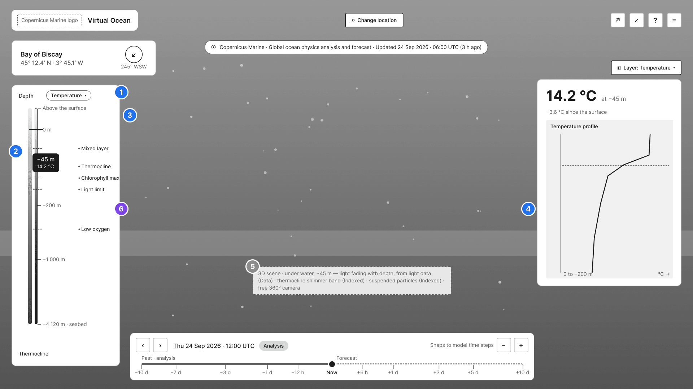
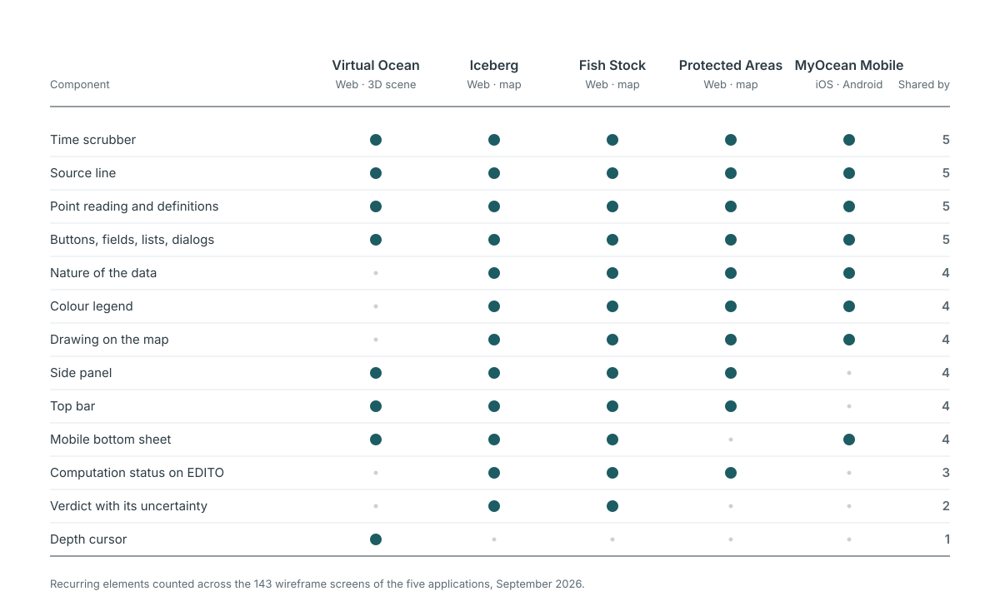
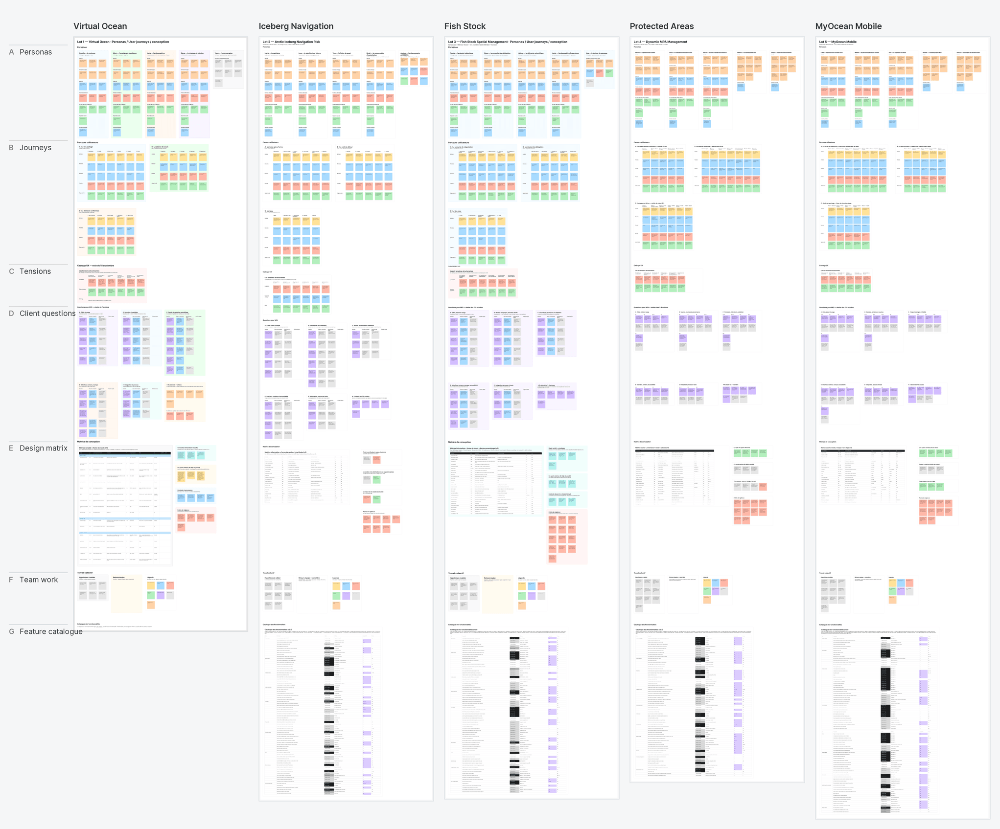
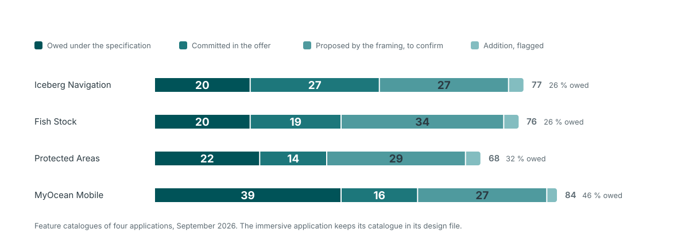
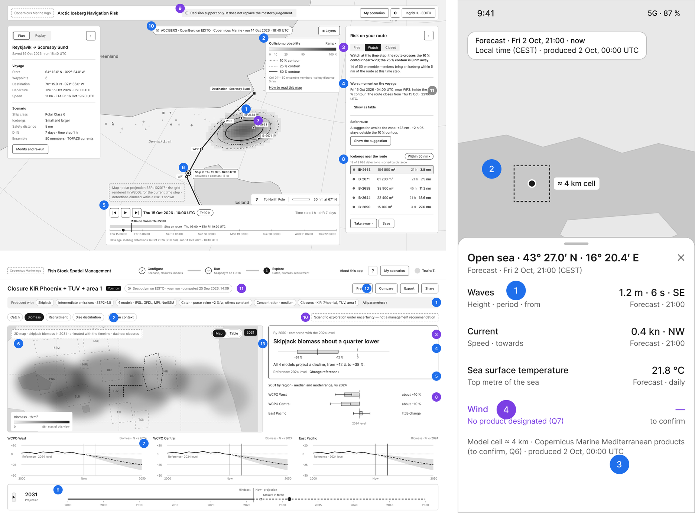
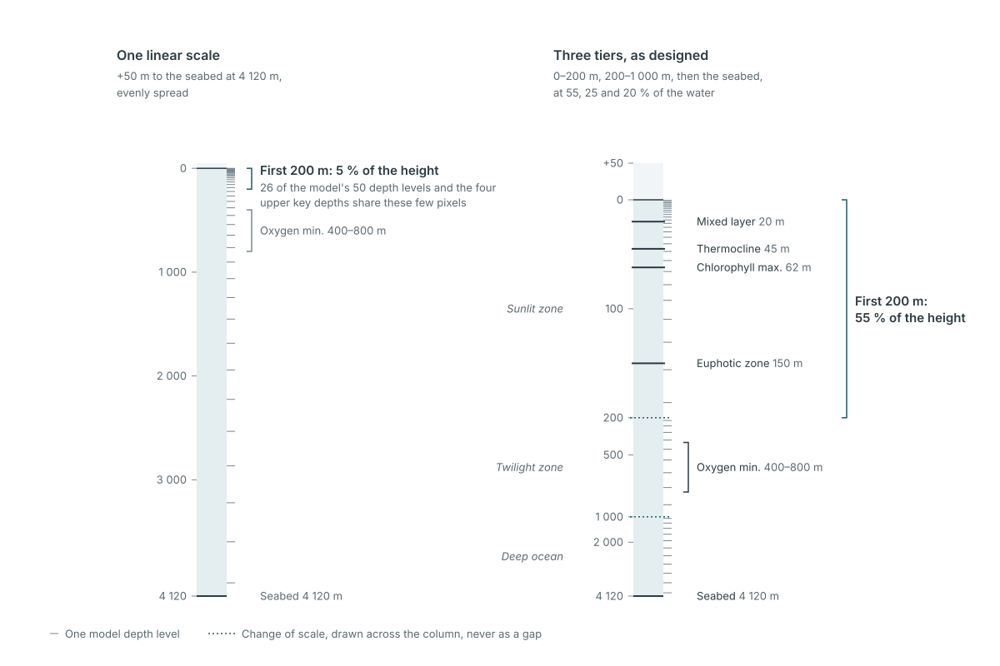
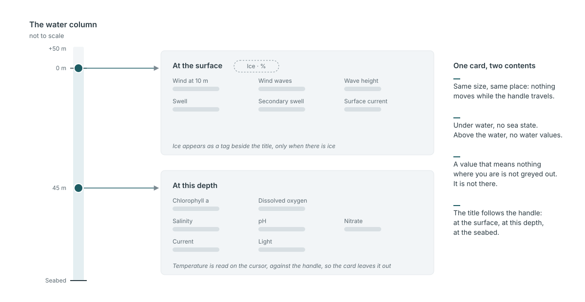
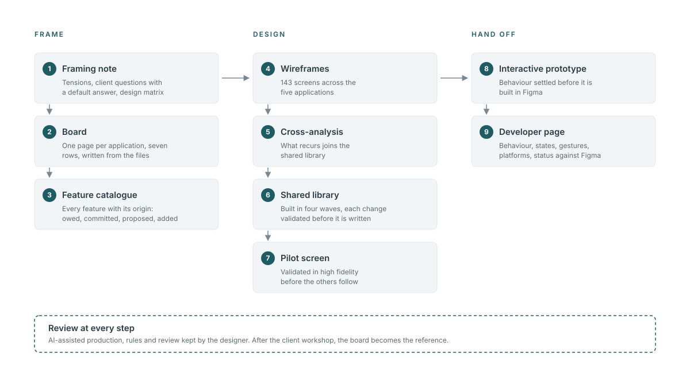
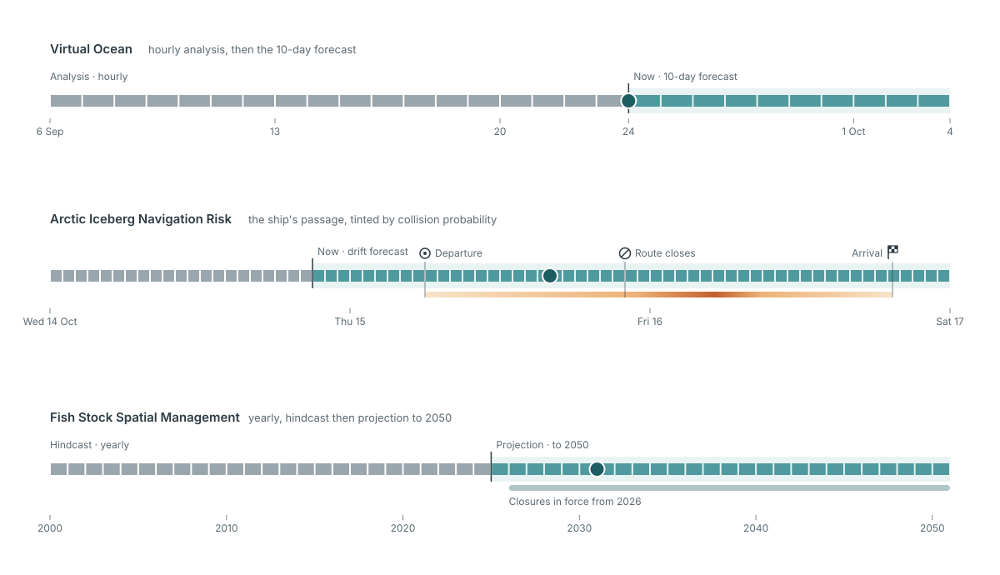

Mercator Ocean
Designing five ocean-data applications around one design system
Lead UX/UI designer at Camptocamp on the five applications Mercator Ocean International commissioned to show how the Copernicus Marine Service can support decisions: four web apps hosted on the European Digital Twin of the Ocean, and one mobile app. Each one puts ocean models in front of people who are not oceanographers, without letting the data say more than the model knows.

What I want you to take from this project
Three things, if you are deciding whether to talk to me.
I turn a specification into a design brief
Behind the twenty requirements of the immersive application sat four interface objects. Each of the five lots went through the same framing: what the specification actually asks, the tensions it leaves open, and the questions only the client can answer, each with a default answer it can confirm in a word.
I keep model data honest
A value on screen describes a model grid cell kilometres wide, at set depths and time steps, and a forecast is a spread of possible outcomes. The interfaces show where the data stops and how sure it is through the way they draw, before any caption has to explain it.
I hold five products to one system
Five applications, four on the web and one native, move at different speeds on one shared library. A change made for one of them enters the library as an option that leaves the other four untouched, and each component reaches the developers with its behaviour, not just its look.
Project context
- Role
- UX lead at Camptocamp across the five lots, from the tender onwards. UX framing, personas and journeys, information architecture, design system, wireframes and high-fidelity design, interactive prototypes for developer handoff.
- Team
- A project manager who co-owns the product, a head of technology, and engineers in front-end, 3D, data and DevOps, shared between the lots. On the client side, a product owner and the scientific teams behind each model.
- Timeline
-
- May → June 2026. Tender. UX prototypes of the iceberg and fisheries applications in support of the bid.
- September 2026. Kick-off. Framing and wireframes of the five applications, shared library.
- October 2026. First client workshop. High-fidelity design under way.
- → May 2028. Development and delivery, lot by lot.
- Tools
- Figma · Figma Variables · FigJam · Claude Code with the Figma MCP server · Vue 3 prototypes · Phosphor Icons · Confluence
- Applications designed
- Virtual Ocean: an immersive scene of the ocean at any point, from above the surface down to the seabed, driven by Copernicus Marine models.
Arctic Iceberg Navigation Risk: iceberg-drift simulations set against a ship's route, with the collision risk hour by hour.
Fish Stock Spatial Management: Pacific tuna-fishery scenarios run on a population model, with biomass and catch to 2050.
Dynamic Marine Protected Area Management: the state of a protected area, its anomalies and forecasts, and management measures to accept, amend or dismiss.
MyOcean Mobile: Copernicus Marine data on a phone, at your position, with offline download. - Ecosystem
- Copernicus Marine Service · European Digital Twin of the Ocean (EDITO) · MyOcean Pro
- Client
- Mercator Ocean International, Toulouse, which runs the Copernicus Marine Service for the European Commission.
- Current status
- Framing and wireframes done for the five applications, shared library in place, high-fidelity design under way on three of them. First client workshop in October 2026.
The problem
The Copernicus Marine Service publishes some of the most complete ocean data there is: currents, waves, sea ice, temperature, oxygen, chlorophyll, from thirty-year reanalyses to ten-day forecasts. Scientists produce it, document it for other scientists, and are still its main readers.
Mercator Ocean wants five applications that show what this data can do for everyone else: a teacher in front of a class, a captain deciding whether to cross iceberg waters, an analyst preparing a fisheries negotiation for Pacific island states, the manager of a marine protected area facing a heatwave, a sailor heading offshore for the weekend. The web applications also have to hold up on large screens at conferences, where nobody has the mouse.
The specification of the immersive application puts a screenshot from a naval video game next to a rule against any visual artefact that could compromise scientific interpretation. That pair sums up the brief for all five: make model output readable by a non-specialist, without letting the interface claim more than the model knows.

Constraints
- A scientific jury. Oceanographers judge every rendering. Each lot has its own credibility judge among the personas: a scientist who is not a target user, but whose objection would sink the product.
- Five products, one design budget. The five lots run in parallel on a tight design budget. Sharing one library across them is a condition of feasibility, not an optimisation.
- Three kinds of screen. Conference screens at 1920×1080, laptops, and phones, where one of the five applications lives entirely.
- Accessibility. WCAG 2.1 AA on all web content, including an immersive WebGL scene that cannot meet it on its own.
- Mockups before code. The specification requires mockups and usability tests before development. The first client workshop settles the audiences, the variables and who validates the science.
- Open source. Everything ships under the EUPL 1.2 licence and runs on EDITO, the platform of the European Digital Twin of the Ocean.

Design decisions
Each decision had to hold up in front of an oceanographer and still read for someone who is not one. Each one has a cost I accepted.
One library for five products
The five applications share one Figma library: tokens in dark and light modes, desktop and mobile densities, eight scientific colour ramps, and components no public design system offers, such as a depth cursor, a time scrubber or a value readout that carries its source and freshness. Once the five sets of wireframes existed, a cross-analysis of 143 screens decided what joined the library and what stayed local. The time scrubber is one component with options per application: the analysis and forecast window of the immersive app, a ship's route tinted by collision probability on the iceberg app, yearly steps on the fisheries app.
Cost: every component is specified for applications that have not reached it yet. When a decision on one lot contradicts the library, the library changes, and I validate each change before it is written.
Nothing is drawn without a source
The first wireframes of the immersive application held 57 elements. Fifteen came from the specification. Every element now carries its origin: owed under the specification, committed in our offer, proposed by the framing and awaiting the client, or an addition, flagged as such and never drawn in silence. Nineteen elements with no source came out on review, from a loop-playback button to a "Cite this data" action.
Cost: the mockups show less than they could, and good ideas wait for a workshop instead of selling themselves on screen. On a fixed-price contract, anything drawn becomes something the client expects.

A verdict always travels with its uncertainty
Decision-makers want a verdict; models give a distribution. Each application has a rule that keeps the two together. On the iceberg app, a three-step verdict (free, watch, closed) never appears without the probability lines it comes from. On the fisheries app, "about a quarter lower than in 2024" comes with the spread of the climate models, and when the models disagree on the direction, that disagreement is the result. On the mobile app, a value under the finger carries its validity time, its nature and the grid cell it covers: "24 °C" alone would tell a swimmer something the model never said.
Cost: the headline is never as striking as the specification hopes, and rounding to what can be defended gives up a precise-looking number on purpose.
The depth scale shows its own breaks
The water column runs from 50 m above the surface to more than 4,000 m below, and half of the model's depth levels sit in the first 200 m. Instead of one linear scale, the depth cursor follows the ocean's own layers: three regular tiers for the sunlit zone, the twilight zone and the deep ocean. Each change of tier is drawn as a dotted line across the colour ramp, never as a gap, because a gap reads as missing data. The handle moves continuously and settles on the depths where the model has values, and the key depths of the descent (thermocline, chlorophyll maximum, oxygen minimum) are one click away. On a phone the tier breaks go, since a finger cannot use that precision, and the key depths become detents.
Cost: below 1,000 m the cursor moves from one model level to the next, a few hundred metres apart, rather than metre by metre. The interface does not offer a precision the data does not have.
Values appear only where they are true
The values card keeps a fixed size and changes its content with the handle: the sea state at the surface (wind, waves, swell, surface current), the water at the handle's depth below it (temperature, oxygen, chlorophyll, salinity, pH, nitrate, current, light). A value that means nothing where you are is not greyed out. It is not there. The title follows, "At the surface", "At this depth" or "At the seabed", and nothing in the panel changes size while you move.
Cost: surface and depth cannot be read side by side in one card. Comparing them means moving the handle.



Process: from a specification to components developers can read
Each application started with a framing note: what the specification really asks, who the application is for, the tensions it leaves open, and the questions for the client, each with a default answer. A design matrix crossed what the data is with how it can be shown. For the immersive application, every ocean variable met its form of rendering (3D, overlay, chart, text) and its level of honesty: driven by the data, indexed on it, or pure dressing. That convention stays a working tool for reviews with oceanographers, not an element on screen.
The notes were written into a FigJam board, one page per application and the same seven rows on every page: personas, journeys, tensions, questions for the client, matrix, team feedback, feature catalogue. The board is generated from the files, so a correction made in a file reaches the board and nothing gets lost between reviews. Once the client workshop has validated it, the board becomes the reference.
Wireframes came next for all five applications, then the cross-analysis that extended the shared library in four waves, then high fidelity. The components that carry the products (the depth cursor, the time scrubber, the place block with its compass and mini-map) were settled in interactive Vue prototypes before being built in Figma. Each has a page for the developers: current behaviour, states, gestures by mouse, keyboard and finger, platforms, variants per application, code, and a status saying whether the prototype is ahead of Figma or behind it. History stays out of it.
The production was AI-assisted. Claude Code, connected to Figma, turned the framing files into boards, components, screens and prototypes, which is how five applications fit in the time available. I set the rules it worked to and reviewed every output; most of the decisions above were made in that review.

Outcome and reflections
The framing of the five applications, their wireframes and the shared library are in place, and high-fidelity design is under way on the immersive, iceberg and fisheries applications. Validation with Mercator Ocean starts with a workshop in October 2026 on the audiences, the list of variables and the scientific review.
What this project sharpened in my practiceA question with a default answer moves a workshop. "Which variables do you want?" opens a discussion. "Here is the list we will use unless you object" gets a decision.
Honesty about data is drawn before it is written. A dotted line on a scale, a value that disappears where it stops making sense, a verdict that never leaves its spread: none of it needs a caption.
Fast production makes a pilot screen more necessary, not less. Moving 29 screens of the immersive application to high fidelity at once left demo values behind and cost ten rounds of recomposition on its scene panels. The iceberg and fisheries applications started from one validated screen.
What I would do differentlyPut the uncertainty into the first prototype. The prototypes I built for the bid, in May and June, showed a single "DANGER 84 %" on the iceberg application, and a fisheries verdict that stayed at "−23 % by 2055" whatever the inputs. They made the flow convincing and skipped the hard part, which is how sure the model is. Four months later, framing the same products, they were the first things I had to undo.
